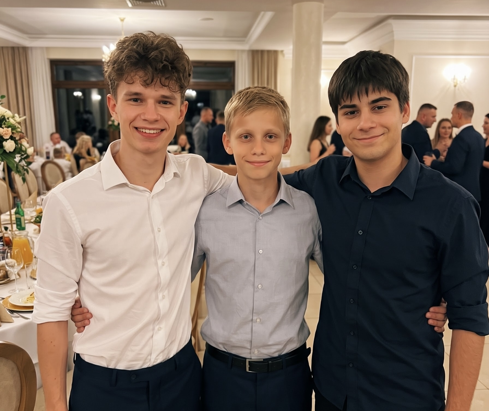
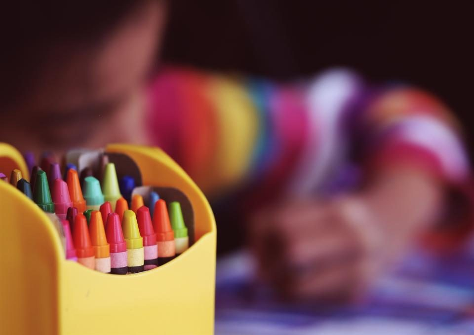
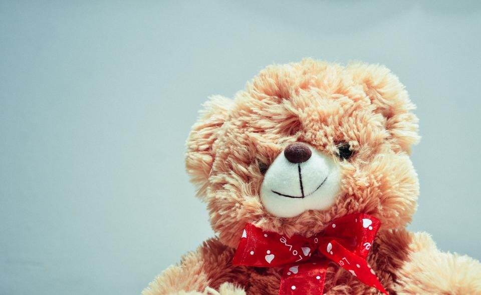
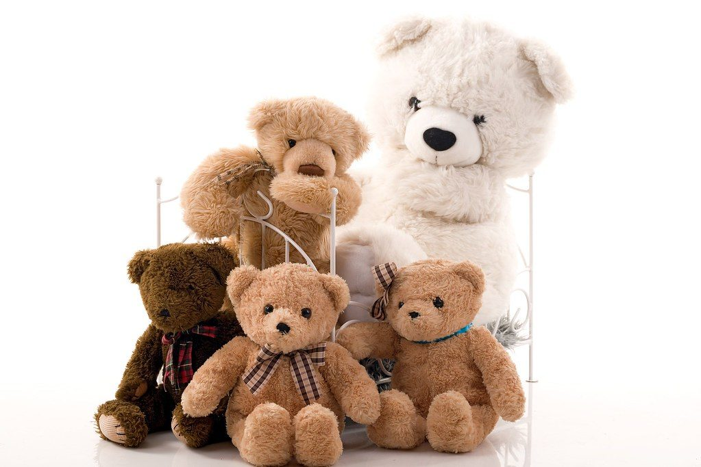

Dawid Fila
Prezes zarządu, finanse
To on policzył brakujące paczki i od tamtej pory pilnuje każdej złotówki. Prowadzi arkusz, w którym widać, na co poszła każda wpłata. Po godzinach gra na gitarze.
Projekt szkolny. Fundacja Wielkie Serca i jej dane są fikcyjne, nie przekazuj na nią podatku.
Pomagamy dzieciom chorym na nowotwory i ich rodzinom. Przekazanie 1,5% nic Cię nie kosztuje, a dla naszych podopiecznych znaczy bardzo dużo.
Do końca rozliczeń PIT (30 kwietnia) zostało:
Całość zajmuje około minuty. Pieniądze, które przekażesz, i tak trafiłyby do urzędu skarbowego. Ty decydujesz, że pójdą na leczenie dzieci.
Zaloguj się do usługi Twój e-PIT na stronie podatki.gov.pl albo wypełnij PIT w programie czy na papierze.
W części o przekazaniu 1,5% podatku dla organizacji pożytku publicznego wpisz numer 0000000000.
To pole jest nieobowiązkowe. Jeśli chcesz wesprzeć konkretne dziecko, wpisz jego imię i nazwisko. Pusty cel oznacza pomoc dla wszystkich podopiecznych.
Wpisz kwotę podatku należnego z Twojego PIT. Znajdziesz ją w zeznaniu w rubryce podatek należny.
W grudniu 2024 roku klasa z V Liceum Ogólnokształcącego im. Marii Skłodowskiej-Curie w Lublinie zawiozła paczki mikołajkowe na oddział onkologii i hematologii dziecięcej. Plan był prosty: zostawić prezenty i wrócić na lekcje.
Dawid, Patryk i Staszek zostali do wieczora. Staszek rysował z dziećmi komiksy o superbohaterach, Patryk przegrał dziewięć meczów z rzędu w piłkę na konsoli z sześcioletnim Kubą, a Dawid zauważył, że dla czworga dzieci zabrakło paczek.
Następnego dnia wrócili z brakującymi prezentami, zebranymi w szkole na jednej przerwie. Potem był kiermasz ciast, który dał 2140 zł, pierwszy Bieg Wielkich Serc nad Zalewem Zemborzyckim i koncert w auli szkoły. W 2025 roku, z pomocą rodziców i wychowawczyni, zarejestrowali Fundację Wielkie Serca.
Dziś pomagamy dzieciom z całej Lubelszczyzny, a większość naszych wolontariuszy to uczniowie lubelskich szkół.

Prezes zarządu, finanse
To on policzył brakujące paczki i od tamtej pory pilnuje każdej złotówki. Prowadzi arkusz, w którym widać, na co poszła każda wpłata. Po godzinach gra na gitarze.
Wiceprezes, wydarzenia
Bieg Wielkich Serc to jego pomysł. W pierwszej edycji wystartowało 312 osób. Organizuje też turnieje e-sportowe, z których cały dochód idzie na podopiecznych. Z Kubą wciąż przegrywa.
Członek zarządu, świetlica i grafika
Logo fundacji narysował na marginesie zeszytu do matematyki. W każdy czwartek prowadzi na oddziale warsztaty komiksu. Komiksy dzieci wydaliśmy w 2026 roku jako książkę.
Pieniądze z 1,5% podatku to największa część naszego budżetu. Wydajemy je na sześć rzeczy.
Dopłacamy do leków, których nie refunduje NFZ, do turnusów rehabilitacyjnych i do sprzętu, np. wózków czy pionizatorów.
Opłacamy spotkania z psychologiem dla dzieci, rodziców i rodzeństwa. Choroba dotyka całą rodzinę.
Zwracamy koszty dojazdów do szpitala rodzinom spoza Lublina. Część z nich jeździ na chemioterapię dwa razy w tygodniu.
Kupujemy książki, gry i przybory do rysowania. Wolontariusze prowadzą zajęcia, a raz w miesiącu na oddział przychodzą superbohaterowie.
Na Mikołajki, Wielkanoc i Dzień Dziecka przygotowujemy paczki dla każdego dziecka na oddziale. Tak zaczęła się fundacja.
Uczymy w szkołach, jak rozpoznać niepokojące objawy i jak wspierać kolegę, który choruje i wraca do klasy po leczeniu.
Potrzebujemy 120 000 zł na sprzęt i remont sali, w której dzieci będą ćwiczyć bez wychodzenia ze szpitala.
81 600 zł z 120 000 zł, czyli 68%
Imiona zmieniliśmy, a zdjęcia są symboliczne. Prywatność dzieci jest dla nas ważniejsza niż efektowna strona.

Białaczkę wykryto u niej w przedszkolu. Przez dwa lata leczenia narysowała ponad 400 obrazków, a najlepsze wisi dziś na korytarzu oddziału. We wrześniu poszła do pierwszej klasy.

Najlepszy gracz na oddziale i postrach Patryka. Jest w trakcie leczenia guza nerki. Fundacja opłaca jego mamie dojazdy z Zamościa i noclegi w Lublinie.

Po leczeniu chłoniaka potrzebowała rehabilitacji, żeby wrócić do siatkówki. Dzięki 1,5% od naszych darczyńców przeszła trzy turnusy. W tym roku znowu gra w szkolnej drużynie.
Nie. Te pieniądze są częścią podatku, który i tak płacisz. Zamiast trafić do budżetu państwa, trafią do fundacji. Twój podatek nie rośnie ani o złotówkę.
Tak. W polu cel szczegółowy wpisz imię i nazwisko dziecka. Całą kwotę przeznaczymy na jego leczenie i rehabilitację.
Każde z was może przekazać 1,5% swojego podatku. Na wspólnym zeznaniu wpisujecie numer KRS raz, a urząd skarbowy przekaże obie części.
Do 30 kwietnia, czyli do końca terminu składania PIT. Jeśli złożysz korektę zeznania w ciągu miesiąca od tego terminu, też możesz wskazać naszą fundację.
Tak. Jeśli nie składasz PIT samodzielnie, wypełnij formularz PIT-OP i złóż go w urzędzie skarbowym albo przez Twój e-PIT.
Co roku publikujemy sprawozdanie z wydatków. Dawid pilnuje, żeby każda wpłata miała swój wpis.
Napisz albo zadzwoń. Odpowiadamy po lekcjach, zwykle tego samego dnia.